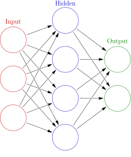

Basics of Neural Networks
An artificial neural network is a fundamental computing technique and structure in artificial intelligence and machine learning. Large Language Models (LLMs) are a very successful type of neural network but neural networks as a general tool are used in other domains and to solve different problems such as machine vision, natural language processing, self-driving automobiles.1
Structure of a Neural Network
2
The basic unit of a neural network is a neuron that takes numerical inputs, performs mathematical operations on those inputs, and produces a numerical output.
Multiple neurons are combined and structured into layers:
- Input layer (red circles in the graphic above)
- One or more hidden layers (blue circles) that process information from the input layer
- Output layer (green circles).
Loss Function
Before training a neural network, a loss function is needed as a way to quantify how well the network is performing. This allows the network to learn and improve. The Mean Squared Error is a common loss function for regression problems and simple networks. When training a network, we are trying to minimize the loss function thereby improving the predictive power of the network.3
Learning Approaches
Neural networks can be trained using supervised learning or unsupervised learning:
- Supervised learning: The neural network has access to both the inputs and expected outputs. It generates a loss function based on this training data to improve its predications.
- Unsupervised learning: The neural network does not have the expected outputs. Instead, it create patterns and relationships in the input data without having a reference to outputs for calculating a loss function.
-
[Neural Network (machine learning)](https://en.wikipedia.org/wiki/Neural_network_(machine_learning) ↩
-
Machine Learning for Beginners: An Introduction to Neural Networks ↩